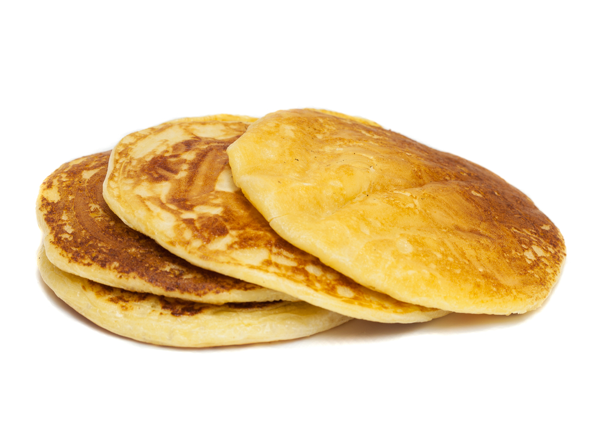

Pancake recipe

Description
A pancake is a thin, flat, circular piece of cooked batter made
from milk, flour, and eggs. Pancakes are often rolled up or
folded and eaten hot with a sweet or savoury filling inside.
In America, pancakes are usually eaten for breakfast, with butter
and maple syrup.
Prep:
5 mins
Cook:
15 mins
Total:>
20 mins
Servings:
8
Yield:
8 servings
Ingredients
- 1 ½ cups all-purpose flour
- 3 ½ teaspoons baking powder
- ¼ teaspoon salt, or more to taste
- 1 tablespoon white sugar
- 1 ¼ cups milk
- 1 egg
- 3 tablespoons butter, melted
Steps
-
In a large bowl, sift together the flour,
baking powder, salt and sugar. Make a well in the center and
pour in the milk, egg and melted butter; mix until smooth.
-
Heat a lightly oiled griddle or frying pan over medium-high heat.
Pour or scoop the batter onto the griddle, using approximately
1/4 cup for each pancake. Brown on both sides and serve hot.